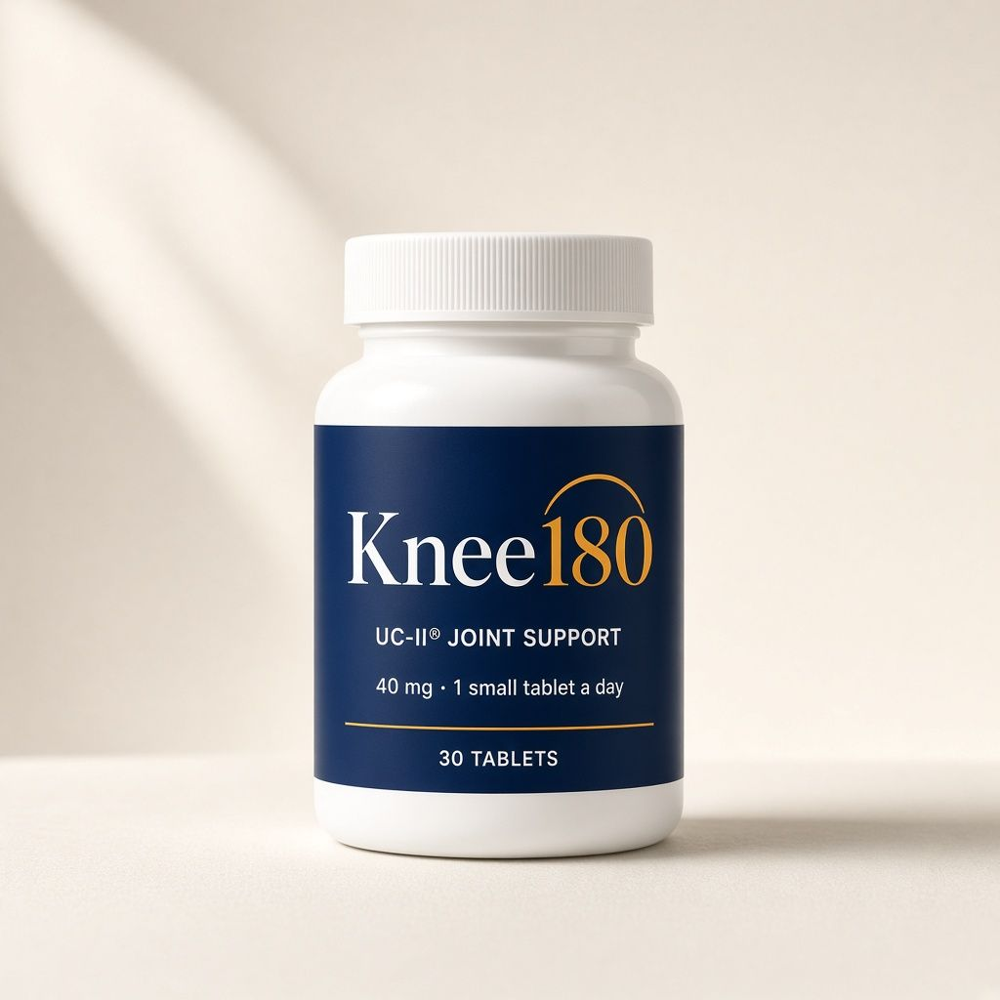
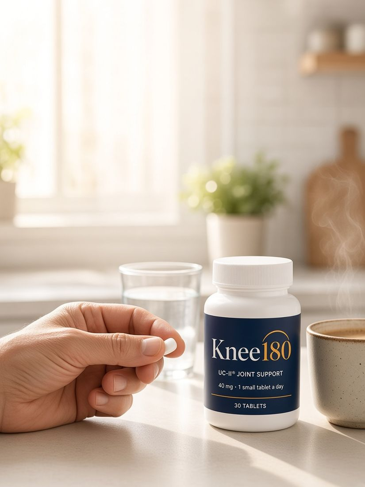
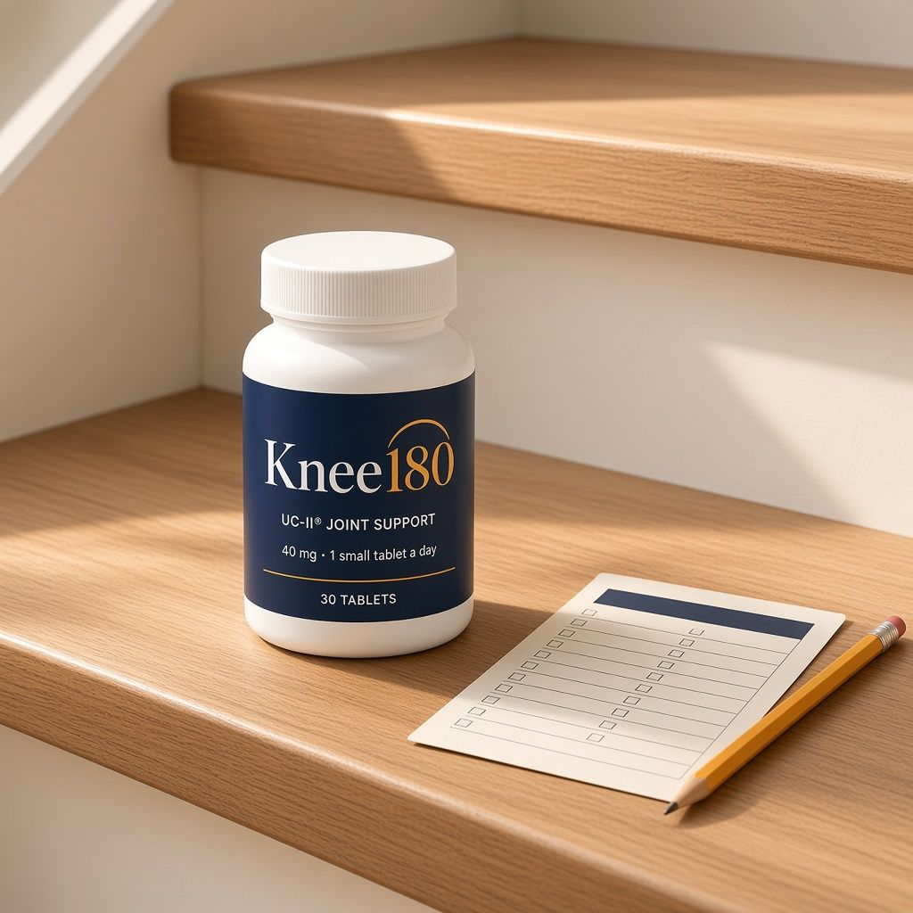

★★★★★ [Show real review average + count only once you have them]
Knee180 Daily is one small tablet of 40 mg UC-II® undenatured type II collagen, the ingredient studied in randomized, placebo-controlled human trials to support knee comfort, flexibility and mobility during everyday activity.*
Subscription: 25% off, ships at the same price every 3 months to match your supply. We email you 3 days before every charge. Cancel online anytime in one click.
Most joint routines are built on grams. A common glucosamine-and-chondroitin routine is 1,500 mg plus 1,200 mg, every day. That's 2,700 mg of large tablets.
UC-II® works at 40 mg because it isn't meant to be raw material. It's type II collagen kept in its native, "undenatured" shape with a patented low-temperature process.
Research suggests it's recognized by immune tissue in your gut (a process called oral tolerance), helping support your body's normal joint response.* (Mechanism based on animal and lab research.)
One small tablet. Taken every day. Measured over 180 days.
Studies below tested the UC-II® ingredient, not the Knee180 finished product. We link every one, including the one that found no difference.
| Who | 96 healthy adults, 20–55, with knee discomfort during activity |
|---|---|
| What | 40 mg UC-II® daily vs placebo, 24 weeks |
| Result | Knee flexion improved 3.23° vs 0.21° on placebo (p = 0.025) |
| Who | 55 healthy adults with knee discomfort after stair-climber exercise |
|---|---|
| What | 40 mg UC-II® daily vs placebo, 120 days |
| Result | Knee extension 81.0° vs 74.0° placebo (p = 0.011). Time exercising before first discomfort rose from 1.4 to 2.8 minutes. No product-related adverse events. |
| Who | 96 healthy adults with activity-related knee discomfort |
|---|---|
| What | 40 mg UC-II® daily vs placebo, 24 weeks |
| Result | Improved sport/recreation function and knee-related quality-of-life scores (KOOS); more daily steps reported in men |
The UC-II® studies ran 120 to 180 days. So does your free Knee180 kit: a printed tracker card, a 180-day checkbox calendar and a movement guide.
| Serving size: 1 tablet · Servings per container: 30 | Amount |
|---|---|
| UC-II® undenatured type II collagen (from chicken sternum cartilage) | 40 mg |
| ** Daily Value not established. Other ingredients: [per manufacturer]. Contains: chicken. [Final values from supplier; supplier to confirm whether 40 mg is the UC-II® ingredient weight] | |
I do laundry in the basement, so that's thirteen steps with a full basket, a few times a day. Somewhere near the end of month two I realized I'd stopped pausing at the bottom to psych myself up. I didn't even notice it happening. My husband did.
The tablet is tiny, which I love after years of horse pills. I think my knees feel a little looser in the mornings, but honestly it's early. I'm giving it the full 180 like they say. Taking off a star only because I wanted it faster!
My grandson is four and everything happens on the floor: trains, puzzles, blanket forts. I used to "help" from the couch. Last weekend I was down on the rug for an hour building a track and got back up without grabbing the coffee table. Small thing. Big deal to me.
I have six raised beds and I'm stubborn about doing them myself. This spring I knelt, weeded, hauled mulch and still went on my walk after. My knees felt more comfortable than they have in years. Already reordered the 5 bottles.
I didn't feel anything the first month and almost quit. Around week six the stiffness after sitting at my desk all day seemed less noticeable. Not dramatic, but real. I wish it were cheaper; the 5-pack helps.
We walk three mornings a week. I used to be the one trailing at the back by the end. The last couple of months I've been up front gabbing. One of the girls ordered it after I told her.
Started pickleball last year and my knees were not thrilled about it. Two months on this and I'm playing twice a week without feeling stiff and creaky afterward.
I danced. Most of the night. That's all I'll say.
Between the vegetable garden and two grandbabies under three, I'm up and down off the ground all day. I feel much more like myself doing it.
Take Knee180 for up to 180 days. Re-test your stairs and chair stands. If your numbers didn't move, or you just aren't happy, email us and we'll refund your purchase. Empty bottles are fine. [Confirm exact terms: e.g., one refund per customer, first order]
[Company LLC], [City, State]. A real person answers every email, usually within hours: questions about your medications, allergies, or your order.
[Optional: "Formula reviewed by [Name, PT, DPT], a paid advisor to Knee180."]
In the UC-II® studies, changes were measured at 90 to 180 days and were gradual. Some people notice changes earlier; many need the full protocol. That's why the 3- and 5-month supplies exist. Individual results vary.
UC-II® is undenatured type II collagen from chicken sternum cartilage, made by Lonza with a patented low-temperature process that keeps the collagen's native shape. It's studied at 40 mg a day. It isn't used as raw material like collagen powders; research suggests it works through the gut's immune tissue.
Many people do, and there's no known reason you can't. Check with your doctor or pharmacist if you're unsure.
Knee180 is a dietary supplement, but please ask your doctor or pharmacist before starting it if you take prescription medications (including blood thinners), are pregnant or nursing, or are scheduled for surgery. Reply to your order email with any question and we'll help, though we can't give medical advice.
UC-II® is chicken-derived. If you have a chicken or egg allergy, talk to your doctor before taking it.
No. UC-II® comes from chicken cartilage.
In the published UC-II® trials, side effects were similar to placebo. As with any supplement, stop and contact your doctor if you notice anything unusual.
Yes, other brands sell UC-II®. With Knee180 you get the 180-day tracker kit and movement guide, a real person to email, and a 180-day guarantee so you can judge it on your own results.
You save 25% on the bundle you choose, and it ships at the same price every 1, 3 or 5 months. We email you 3 days before every charge. Skip, change or cancel online anytime in one click.
[Manufacturer city/state], in a cGMP facility [confirm FDA-registered facility / NSF / third-party lab]. Every batch is tested; the certificate of analysis is linked above.
Time the stairs. Count the chair stands. Then give it 180 days, with your money back if your numbers don't move.
Start My 180 →*These statements have not been evaluated by the Food and Drug Administration. This product is not intended to diagnose, treat, cure, or prevent any disease.
Clinical studies referenced were conducted on the UC-II® (and Aflapin®) ingredients, not on the Knee180 finished product. Individual results vary. Consult your healthcare provider before starting any supplement, especially if you are pregnant, nursing, taking medication, or have a medical condition.
UC-II® is a registered trademark of Lonza Greenwood LLC. Aflapin® is a registered trademark of its respective owner. [Use marks only per supplier license/brand guidelines.]
[Company LLC] · [Address] · [founder@knee180.com] · Returns · Privacy · Terms · Subscription terms